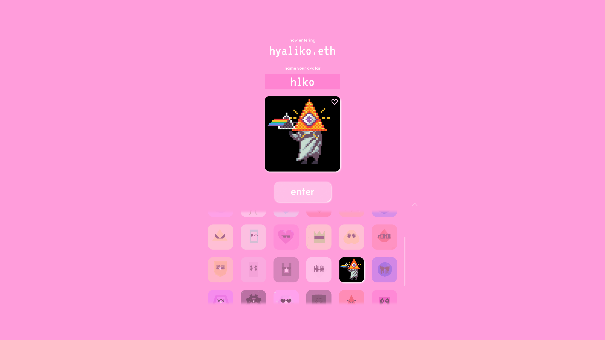
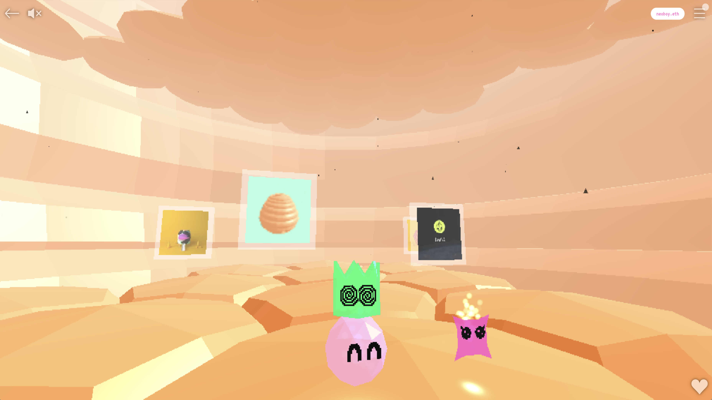

Overview
📌 Hyaliko is a universe occupied by the Hyaliko particles, purveyors of fine art. This universe revolves around a gallery platform made of Spaces design for displaying and sharing NFTs. Each Space is a 3D gallery that can be explored and curated to the Space holders liking. Every gallery is free to visit and explore. You can read more about us here.
🗓️ Oct 2021 - Jun 2022
Expanding the Hyaliko Universe
During my time at Hyaliko I designed and modeled 3D NFT gallery Spaces, launched the Hyaliko Avatar Collection and online 3D minting experience, and provided visual and product design support across the Hyaliko universe.
Avatars
The Hyaliko Avatar Collectionconsists of fully on-chain 3D Avatars that serve as interoperable w3b identities within Hyaliko and beyond. Each avatar is an NFT consisting of a randomly combined 3D body, 2D face, and body color. Existing space holders were allotted a set number of free mints before public minting began. The avatars were minted within a new 3D Space designed specifically for this experience. The Hyaliko Collection minted out in January 2023.
Spaces
I designed and launched the final 10 Spaces for the Hyaliko Space Collection. Each Space is an NFT that gives you access to your very own virtual gallery. Once inside you can curate, explore, and hangout with your friends. When designing these spaces I tried to invoke a sense of play, discovery, and wonder. Keeping the spaces low poly helped to evoke those emotions as well as being an optimization factor for the performance of the platform.


Hyaliko Summary
During my time at Hyaliko I was able to collaborate on some of the most fun and rewarding projects I've worked on. This work was around the beginning of my professional digital design career as well as the height of the NFT craze. The products we shipped were not only fun to create but also a delight to use to this day.
If you would like more information about this work please contact me.